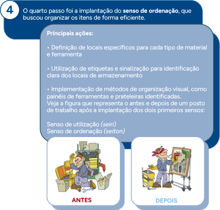
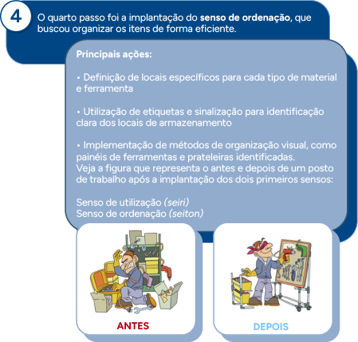

Ferramentas e metodologias para melhoria do sistema de gestão da qualidade: conceito, características e aplicação de sistema lean, método A3, seis sigma, kaizen, programas 5S, grupos de melhoria e Semana da Qualidade
No cenário altamente competitivo dos dias atuais, os clientes estão cada vez mais exigentes e as empresas enfrentam muita concorrência. Simplesmente fazer o básico e atender aos padrões estabelecidos já não é o bastante. Para sobreviver e ter sucesso, é importante melhorar continuamente. Diante desse desafio, as empresas precisam de metodologias e ferramentas para aprimorar seus sistemas de gestão e, consequentemente, seus processos.
Neste conhecimento, serão exploradas diversas metodologias e ferramentas que podem contribuir para a melhoria do sistema de gestão da qualidade (SGQ). Inicialmente, você verá o 5S, que é uma metodologia fundamental para estabelecer uma base sólida de organização, limpeza e padronização no ambiente de trabalho. Em seguida, será explorado o kaizen, uma filosofia de melhoria contínua que promove a identificação e implementação sistemática de pequenas melhorias constantes.
Após estabelecer essa base com o 5S e o kaizen, serão exploradas as características e aplicações do sistema lean. O lean manufacturing (ou, em português, manufatura enxuta) concentra-se na eliminação de desperdícios e na maximização do valor para o cliente.
Você também estudará o método A3, que é uma abordagem estruturada para solução de problemas e melhoria de processos, além do seis sigma, que se concentra na redução da variação e no aprimoramento da qualidade por meio da aplicação de métodos estatísticos.
Por fim, estudará a importância das equipes de melhoria da qualidade (EMQ) e dos eventos da qualidade como ferramentas para envolver e engajar os funcionários, promover a colaboração e acelerar a implementação de melhorias.
Prepare-se para explorar diversas ferramentas e metodologias para a melhoria do SGQ! Você está pronto? Bons estudos!
Conceito
Metodologias e ferramentas para melhoria do SGQ abrangem um conjunto diversificado de técnicas, abordagens e instrumentos utilizados para identificar, analisar e solucionar problemas, bem como para otimizar processos e procedimentos relacionados à qualidade em uma organização. Desde as clássicas ferramentas da qualidade (já vistas em unidades curriculares anteriores), como diagramas de Ishikawa e Pareto, até metodologias mais abrangentes, como seis sigma (ou six sigma) e lean manufacturing, esse conjunto de recursos oferece às empresas as ferramentas necessárias para alcançar padrões mais elevados de desempenho e satisfação do cliente. Ao adotar e implementar essas metodologias e ferramentas de forma eficaz, as organizações podem melhorar continuamente seu SGQ, impulsionando a inovação, a eficiência operacional e a excelência em todos os aspectos de suas operações.
Neste contexto, é fundamental compreender o conceito de “desperdício”, que abrange tudo aquilo que consome recursos sem adicionar valor aos processos. Reconhecer e eliminar esses desperdícios é crucial para aprimorar a eficiência e a qualidade. Uma ferramenta valiosa para alcançar esse objetivo é o programa 5S, o qual você verá a seguir.
Programa 5S
O programa 5S é uma metodologia de gestão originária do Japão, desenvolvida com o intuito de promover a organização, a limpeza e a padronização nos ambientes de trabalho. Seu nome deriva de cinco palavras japonesas, todas iniciadas com a letra S, que representam as etapas do processo: seiri (senso de utilização), seiton (senso de ordenação), seiso (senso de limpeza), seiketsu (senso de padronização) e shitsuke (senso de disciplina).
Fonte: Adaptado de Metalúrgica Spillere (s. d.)
Por que “senso”? No Brasil, como a tradução literal das palavras japonesas não inicia com a letra S, utiliza-se a palavra “senso“, que significa exercitar a capacidade de analisar, raciocinar, entender e julgar. Os 5S apresentados como sensos refletem melhor a ideia de mudança comportamental das pessoas, ou seja, todos precisam sentir a necessidade de adotá-los.
Os 5S podem ser utilizados em diferentes cenários, desde estabelecimentos comerciais e ambientes industriais até residências e rotinas pessoais. Além disso, eles também podem ser implementados de forma eficaz em espaços virtuais e digitais. Conheça cada um desses sensos.
Senso de utilização (seiri)
Separar o útil do inútil e manter apenas o essencial para um trabalho eficiente.
Nesta primeira etapa, o foco é identificar e separar o que é realmente necessário para a execução das atividades daquilo que não é essencial. É o momento de eliminar o que é não é utilizado, reduzindo desperdícios e tornando o ambiente mais funcional.
É possível dizer que esse senso se divide em classificação, seleção e descarte, conforme detalhado na figura:
Fonte: Senac EAD (2024)
A figura apresenta um diagrama horizontal sobre a classificação de itens e respectivas ações a serem tomadas. Ela é composta de retângulos coloridos que se subdividem horizontalmente da seguinte forma: Classificar os itens. Subdivide-se em itens necessários ou itens desnecessários. Na sequência, os itens necessários podem ser classificados como: uso frequente, uso ocasional ou raramente utilizado. Já os itens desnecessários podem ser classificados em: potencialmente útil e sem potencial de uso. Essas classificações finais resultam nas seguintes ações: uso frequente – catalogar para o local de trabalho; uso ocasional – catalogar para próximo do local de trabalho; raramente utilizado – catalogar, separadamente, em local determinado; potencialmente útil – catalogar de acordo com o uso potencial; e, por fim, sem potencial de uso – doar, vender ou descartar.
Observe, na figura, que é importante catalogar os itens, após sua classificação em necessários e desnecessários, de acordo com sua frequência de uso – seja frequente, seja ocasional, seja raro. Os itens necessários devem ser organizados de forma acessível, enquanto os desnecessários podem ser subdivididos em duas categorias: aqueles com potencial de uso, que podem ser realocados para locais de maior necessidade, e aqueles sem potencial de uso, que devem ser descartados de maneira adequada.
Ao implementar o senso de utilização, os colaboradores aprendem a priorizar o essencial, tornando mais fácil e eficiente a realização das tarefas cotidianas. Além disso, a prática reduz o desperdício e otimiza o espaço disponível, contribuindo para um ambiente de trabalho mais organizado e produtivo.
Senso de ordenação (seiton)
Estabelecer um lugar para cada coisa e garantir que cada coisa esteja em seu lugar.
Após a etapa de utilização, é fundamental estabelecer uma ordem lógica e eficiente para os itens que sobraram. Isso envolve definir locais específicos para cada objeto, de forma que seja fácil localizá-los quando necessário. Veja a figura, que apresenta uma sugestão de como organizar esse processo:
Fonte: Senac EAD (2024)
A figura apresenta um diagrama horizontal, com base no senso de utilização, sobre a classificação de itens e respectivas ações a serem tomadas. Ela é composta de retângulos coloridos que se subdividem horizontalmente da seguinte forma: Senso de utilização. Subdivide-se em itens necessários ou itens desnecessários. Na sequência, os itens necessários podem ser classificados como: uso frequente, uso ocasional ou raramente utilizado. Já os itens desnecessários podem ser classificados em: potencialmente útil e sem potencial de uso. Essas classificações finais resultam nas seguintes ações: uso frequente – posicionar no local de trabalho, de forma a ter acesso rápido a estes itens; uso ocasional – posicionar próximo ao local de trabalho, sem afetar o acesso aos itens frequentes; raramente utilizado – guardar próximo ao local de trabalho, em local determinado; potencialmente útil - transferir para onde for útil; e, por fim, sem potencial de uso – doar, vender ou descartar.
Conforme apresentado na figura, é importante observar que os itens frequentemente utilizados devem ser colocados em locais de fácil acesso no ambiente de trabalho. Itens de uso ocasional devem ser posicionados nas proximidades, de modo a não interferir no acesso aos itens mais utilizados. Itens raramente utilizados devem ser armazenados próximo ao local de trabalho, em um local designado. Quanto aos itens que não são mais necessários, mas ainda podem ser úteis, é recomendável transferi-los para onde possam ser aproveitados. Itens sem potencial de uso devem ser doados, vendidos ou descartados.
Com essa organização, o acesso aos itens torna-se facilitado, reduzindo significativamente o tempo desperdiçado em busca de ferramentas ou documentos e, consequentemente, aumentando a produtividade e a eficiência operacional. Fica mais rápido e fácil encontrar documentos, materiais, ferramentas e outros objetos, por exemplo.
Senso de limpeza (seiso)
Manter o ambiente limpo e organizado e cultivar o hábito de não sujar.
O senso de limpeza vai além da higienização do ambiente físico, incluindo a manutenção regular de equipamentos, a eliminação das causas da sujeira e principalmente o aprendizado de não sujar. Nesta etapa, além de limpar a área de trabalho, as rotinas que geram sujeira devem ser investigadas e analisadas, buscando modificá-las. Tudo que agride o meio ambiente pode ser considerado sujeira (iluminação deficiente, ruído, pouca ventilação, mau cheiro, poeira etc.).
Manter um ambiente limpo e arrumado não apenas promove a saúde e a segurança dos colaboradores, mas também melhora a imagem da empresa. A satisfação dos colaboradores e clientes pode ser melhorada por utilizarem ambientes limpos e organizados. Além disso, a limpeza regular pode ajudar a identificar e resolver problemas antes que se tornem grandes obstáculos, trazendo ainda mais segurança e controle.
Veja a figura, que representa o antes e depois de uma mesa de trabalho, após a implantação dos três primeiros sensos do 5S:
Fonte: Udesc (s. d.)
A figura apresenta duas figuras lado a lado, em que uma delas, à direita, tem uma mesa com diversos itens de escritório fora do lugar, com papeis amassados por cima da mesa e, logo abaixo da figura, um símbolo em X. Já a figura da esquerda tem a mesma mesa com diversos itens de escritório guardados e organizados, sem lixo aparente, e com um símbolo em V.
Senso de padronização (seiketsu)
Padronizar processos e sustentar as práticas estabelecidas para garantir a consistência.
Depois de implementar as três primeiras fases do programa 5S, deve-se partir para a padronização. Essa etapa exige persistência, pois, caso não haja mudanças no comportamento das pessoas e nos costumes que geram sujeira, logo a situação inicial pode voltar.
A padronização envolve a criação de normas e procedimentos claros para manter os padrões estabelecidos nas etapas anteriores. Isso inclui a documentação de processos, a criação de checklists e a realização de treinamentos para garantir que todos os colaboradores estejam alinhados com as práticas recomendadas. Também é importante definir as responsabilidades de cada um.
A padronização ajuda a manter a consistência ao longo do tempo e facilita a identificação de desvios que possam ocorrer. Também traz equilíbrio físico e mental e melhora o ambiente e as condições de segurança.
Senso de disciplina (shitsuke)
Promover a disciplina e o compromisso com os padrões definidos, melhorando continuamente.
O senso de disciplina refere-se à manutenção e melhoria dos padrões estabelecidos de forma contínua. Isso requer o engajamento de todos os colaboradores, desde os líderes até a equipe de base, para garantir que as práticas do 5S se tornem parte da cultura organizacional. A disciplina envolve o cumprimento rigoroso das normas estabelecidas e a disposição para identificar e corrigir problemas conforme eles surgem.
Os sensos devem ser seguidos com disciplina, transformando-os em hábitos. Mais do que uma metodologia, o 5S deve ser adotado como uma filosofia e uma cultura organizacional. Ao internalizá-lo dessa forma, facilita-se a execução das tarefas, promove-se o autodesenvolvimento pessoal e profissional e constrói-se a base para a implementação bem-sucedida de outros programas de qualidade, sejam eles específicos, sejam mais abrangentes.
Veja a figura que apresenta alguns dos benefícios da aplicação do 5S:
Fonte: Adaptado de Metalúrgica Spillere (s. d.)
Imagem com 11 tópicos, cada um representado por uma figura em circulos, 1 - Redução de desperdícios e custos, 2 - Otimização dos recursos e espaços disponíveis, 3 - Maior organização e limpeza no ambiente, 4 - Prevenção de acidentes e maior segurança, 5 - Melhoria do fluxo de trabalho, 6 - Facilitação da comunicação, 7 - Desenvolvimento do trabalho em equipe, 8 - Melhoria da qualidade de vida dos colaboradores, 9 - Maior motivação dos colaboradores, 10 - Melhoria da eficiência e dos resultados, 11 - Cultura de melhoria contínua
Que tal conhecer um case de implantação do programa 5S?
A empresa Metalúrgica Alfa estava enfrentando diversos problemas, como:
- Desorganização no ambiente de trabalho
- Elevado tempo de busca por ferramentas e materiais
- Acúmulo de materiais desnecessários
- Falta de limpeza e manutenção adequada dos equipamentos
- Baixa moral e produtividade dos funcionários
Diante desse cenário, o técnico em qualidade Eduardo pensou em implementar o programa 5S para melhorar a organização, a limpeza e a eficiência do ambiente de trabalho, promovendo uma cultura de qualidade e disciplina entre os colaboradores. Ele planejou sete passos para a implementação do programa 5S, e cada passo tinha um bloco de ações a serem realizadas.
Conheça cada um dos passos dados por Eduardo:
 


1. O primeiro passo foi sensibilizar a alta administração para que se comprometesse com a condução do programa 5S.
Principais ações:
- Reunião de apresentação para a alta administração com os conceitos, os benefícios e a importância do programa 5S
- Definição de metas claras e mensuráveis junto à alta administração
2. O segundo passo foi sensibilizar e treinar os colaboradores, bem como formar equipes de trabalho responsáveis pela implementação do 5S.
Principais ações:
- Realização de palestras e treinamentos explicativos sobre o conceito e os benefícios do 5S
- Criação de materiais informativos, como cartazes e manuais, distribuídos em toda a empresa
- Formação de equipes de trabalho responsáveis pela implementação e pelo acompanhamento do 5S
3. Como terceiro passo, houve a implantação do senso de utilização, buscando identificar e eliminar itens desnecessários.
Principais ações:
- Inventário de todos os materiais e ferramentas no ambiente de trabalho
- Classificação dos itens em necessários e desnecessários
- Descarte ou realocação dos itens desnecessários
4. O quarto passo foi a implantação do senso de ordenação, que buscou organizar os itens de forma eficiente.
Principais ações:- Definição de locais específicos para cada tipo de material e ferramenta
- Utilização de etiquetas e sinalização para identificação clara dos locais de armazenamento
- Implementação de métodos de organização visual, como painéis de ferramentas e prateleiras identificadas.
Veja a figura que representa o antes e depois de um posto de trabalho após a implantação dos dois primeiros sensos:
Fonte: Adaptado de Martins (2019)
A figura apresenta duas figuras lado a lado. Uma delas, à direita, mostra um local de trabalho desorganizado em que o funcionário está bravo e aparentemente procurando alguma ferramenta nas várias caixas espalhadas e, logo acima da figura, escrito “Antes”. Já a figura da esquerda tem o mesmo local de trabalho organizado em que o mesmo funcionário está feliz pegando a ferramenta com facilidade do quadro de ferramentas e, logo acima da figura, escrito “Depois”.
5. O quinto passo foi a implantação do senso de limpeza, com o objetivo de manter o ambiente de trabalho limpo.
Principais ações:
- Estabelecimento de rotinas diárias de limpeza
- Atribuição de responsabilidades de limpeza a cada setor e funcionário
- Utilização de checklists para garantir que todas as áreas sejam adequadamente limpas
Veja a figura que representa o antes e depois do almoxarifado, após a implantação dos três primeiros sensos:
Fonte: Adaptado de Martins (2019)
A ilustração apresenta duas figuras lado a lado, em que uma delas, à direita, mostra um local de trabalho (área de manutenção) desorganizado, com várias caixas de papelão abertas dentro e fora da estante, com lixo espalhado pelo chão e, logo acima da figura, escrito “Antes”. Já a figura da esquerda tem o mesmo local de trabalho totalmente organizado, limpo, devidamente com os locais delimitados no chão (com fita ou tinta amarela), com lixeira no local correto, mesa limpa e organizada, e com caixas organizadoras na estante que facilitam a identificação dos objetos e ferramentas e, logo acima da figura, escrito “Depois”.
6. O sexto passo foi a implantação do senso de padronização, com o objetivo de padronizar as melhores práticas de organização e limpeza.
Principais ações:
- Desenvolvimento de normas e procedimentos padrão para organização e limpeza
- Treinamento contínuo dos colaboradores nas práticas padronizadas
- Monitoramento e auditoria regular das práticas de 5S para garantir a conformidade
7. O sétimo passo foi a implantação do senso de disciplina, buscando manter e melhorar continuamente as práticas de 5S.
Principais ações:
- Criação de um sistema de auditorias periódicas para verificar a manutenção do 5S.
- Recompensas e reconhecimento para equipes e funcionários que se destacam na prática do 5S
- Implementação de um programa de sugestões para melhorias contínuas no 5S
É importante ressaltar que a empresa optou inicialmente por realizar um projeto “piloto” apenas no setor de almoxarifado, que depois foi estendido a todas as áreas da empresa. Os resultados foram acompanhados de perto pelas equipes de trabalho, com reuniões internas semanais e reuniões mensais com a alta direção, para avaliar o progresso do programa, identificar desafios e oportunidades de melhoria e garantir o alinhamento contínuo com os objetivos organizacionais. Essa abordagem de acompanhamento próximo foi fundamental para a eficácia da implementação do programa 5S e para garantir sua sustentabilidade a longo prazo.
Após seis meses da implementação do programa 5S, a indústria Metalúrgica Alfa observou os seguintes resultados:
- Redução de 18% no tempo de busca por ferramentas e materiais
- Diminuição de 32% no desperdício de materiais
- Melhoria na moral e na satisfação dos funcionários, refletida em um aumento de 4% na pesquisa interna de clima organizacional
- Redução de 72% nos acidentes de trabalho relacionados à desorganização
- Aumento de 7% na produtividade geral da empresa
A implantação do programa 5S na indústria Metalúrgica Alfa demonstrou ser uma estratégia eficaz para melhorar a organização, a limpeza e a eficiência do ambiente de trabalho, resultando em um ambiente mais seguro, produtivo e agradável para todos.
Quais foram os passos fundamentais para o sucesso do programa?


Características e aplicação do sistema lean
O lean manufacturing, traduzido para o português como manufatura enxuta, é uma filosofia de gestão que visa maximizar o valor para o cliente por meio da eliminação de desperdícios. Nesse contexto, desperdício é considerado tudo aquilo que consome energia e dinheiro sem agregar valor para o cliente.
Originário do sistema Toyota de produção, inicialmente aplicado na manufatura, o lean atualmente é utilizado nos mais variados setores. A abordagem lean busca melhorar continuamente os processos para aumentar a eficiência, reduzir os custos e melhorar a qualidade. Taiichi Ohno, diretor da Toyota e um dos principais criadores do lean, focou os esforços da empresa na eliminação do que ele chamou de “sete tipos de desperdícios”. Esses desperdícios são:
Superprodução
Produzir mais do que o necessário ou antes do necessário.
Exemplo: uma empresa de eletrônicos fabrica um grande lote de smartphones baseado em previsões de vendas otimistas para um novo modelo. No entanto, a demanda real pelo produto é menor do que o esperado. Como resultado, muitos smartphones ficam parados no estoque, levando a custos adicionais de armazenamento e necessidade de descontos para tentar vender o excedente.
Tempo de espera
Tempo ocioso que produtos ou pessoas gastam esperando por algo (materiais, informações, pessoas etc.).
Exemplo: em uma clínica médica, os pacientes aguardam longos períodos antes de serem atendidos em razão de uma programação ineficiente e de atrasos nos procedimentos anteriores.
Transporte
Movimentação desnecessária de materiais, produtos ou ferramentas e informações em excesso ou desnecessárias à execução do trabalho.
Exemplo: em uma fábrica de móveis, as peças de madeira cortadas são transportadas de um setor para outro que fica distante, resultando em tempo e esforço desnecessários apenas para mover materiais de um lugar para outro.
Excesso de processamento
Realizar mais trabalho ou mais etapas do que o necessário.
Exemplo: em uma empresa de software, os desenvolvedores são orientados a incluir funcionalidades adicionais e complexas em um aplicativo, mesmo que essas funcionalidades não tenham sido solicitadas pelos clientes e não sejam essenciais para o uso principal do produto. Isso resulta em um software mais complexo e difícil de usar, além de maior tempo e custo de desenvolvimento sem aumentar o valor percebido pelos clientes.
Estoque
Estoque excessivo que não agrega valor.
Exemplo: uma loja de roupas mantém um grande estoque de uma coleção passada que não está vendendo bem. Esse excesso de inventário ocupa espaço valioso e representa dinheiro parado que poderia ser mais bem utilizado.
Movimento
Movimentação desnecessária de pessoas ou equipamentos.
Exemplo: em uma linha de montagem de eletrônicos, os funcionários precisam se deslocar frequentemente para pegar ferramentas ou componentes que estão mal posicionados, causando fadiga e perda de tempo.
Defeitos
Produtos ou serviços que não atendem aos padrões de qualidade, resultando em retrabalho, desperdício ou insatisfação do cliente.
Exemplo: em uma fábrica de brinquedos, uma série de carrinhos é produzida com rodas defeituosas, exigindo retrabalho ou descarte, o que consome tempo e recursos adicionais.
Hoje, além dos sete desperdícios tradicionais do lean, já se utiliza um oitavo desperdício: o talento não utilizado. Isso se refere à subutilização das habilidades e capacidades dos colaboradores, deixando de aproveitar todo o potencial que eles podem oferecer à organização.
Para alcançar a diminuição de seus custos por meio da redução de desperdícios, a Toyota utilizou, principalmente, os métodos just in time (JIT) e jidoka. Que tal conhecê-los?
Just in time
Produzir somente o necessário, no tempo certo, eliminando qualquer desperdício.
Just in time (JIT) é uma abordagem de gestão de estoque e produção que visa minimizar o desperdício e maximizar a eficiência. Originada no Japão, especificamente na Toyota, durante os anos 1970, como parte do sistema Toyota de produção, o JIT revolucionou a forma como as empresas administram suas operações.
A filosofia do JIT baseia-se em produzir ou comprar apenas o necessário, no momento certo e na quantidade necessária para atender à demanda do cliente. Isso significa que a produção é acionada apenas quando há um pedido do cliente, eliminando estoques excessivos em todos os estágios do processo de produção. Ao reduzir os estoques, as empresas podem economizar em espaço de armazenamento, custos de manutenção de estoque e desperdício associado à obsolescência ou danos.
Conforme Pezzatto (2018), “muitas montadoras automobilísticas já têm adotado esta prática, com entregas periódicas durante o dia, onde os fornecedores entregam pequenas quantidades diretamente na produção. Exemplo: os pneus são entregues de hora em hora em quantidades apenas para aquele período”.
O JIT também enfatiza a importância da qualidade em todas as etapas do processo. Ao minimizar os estoques, os problemas de qualidade podem ser identificados mais rapidamente, pois não há camadas de estoque para mascarar defeitos. Isso leva a um ciclo de retorno mais curto, permitindo correções rápidas e melhorias contínuas na qualidade do produto.
Além disso, o JIT promove uma cultura de melhoria contínua e envolvimento dos colaboradores. Todos são incentivados a sugerir melhorias nos processos para eliminar desperdícios e aumentar a eficiência. Isso cria um ambiente de trabalho mais colaborativo e empoderado, onde todos estão engajados na busca pela excelência operacional.
Com base nisso, é possível destacar algumas das principais características do JIT:
Produção puxada
Em vez de produzir com base em previsões de demanda, a produção é determinada pela demanda real do cliente. Isso significa que os produtos são fabricados apenas quando há um pedido específico.
Redução de estoques
Manter níveis mínimos de estoque de matérias-primas, produtos semiacabados e acabados. Isso reduz os custos de armazenamento e o risco de obsolescência ou deterioração dos produtos.
Fluxo contínuo
Assegurar que os materiais e informações fluam de maneira contínua e eficiente por meio do processo de produção, evitando interrupções.
Eliminação de desperdícios
Identificar e eliminar atividades que não agregam valor ao produto ou serviço final, como excesso de produção, tempo de espera, transporte desnecessário etc.
Aspectos importantes de priorizar na implementação do JIT
Na implementação do JIT, é importante priorizar alguns aspectos. Veja, a seguir quais são eles.
Aspectos importantes de priorizar na implementação do JIT
Na implementação do JIT, é importante priorizar alguns aspectos. Veja, a seguir quais são eles.
Relacionamento com fornecedores
Desenvolver relações próximas e de confiança com fornecedores, garantindo entregas frequentes e pontuais de materiais de alta qualidade. A proximidade geográfica dos fornecedores também pode ser um fator crítico.
Layout de produção
Organizar o layout de forma que os materiais possam se mover facilmente entre as estações de trabalho sem grandes deslocamentos.
Qualidade total
Implementar programas rigorosos de controle de qualidade para evitar defeitos, pois a produção JIT não tem espaço para retrabalho ou produtos defeituosos.
Treinamento de funcionários
Investir no treinamento dos colaboradores para que eles sejam multifuncionais e capazes de resolver problemas rapidamente, contribuindo para a eficiência do sistema JIT.
Benefícios da implantação do JIT
A implantação do JIT pode trazer inúmeros benefícios, como:
Redução de custos de estoque
Estoque é capital (dinheiro) parado. Além disso, quando se tem menos estoque, utiliza-se menos espaço de armazenamento e há risco menor de obsolescência.
Melhoria na qualidade
Com o foco na qualidade total e na eliminação de defeitos, os produtos tendem a ter uma qualidade superior.
Maior flexibilidade
A produção puxada permite uma resposta mais ágil às mudanças na demanda do cliente.
Eficiência operacional
Processos mais enxutos e menos desperdícios resultam em maior produtividade e eficiência.
No entanto, apesar dos benefícios significativos, o JIT também apresenta desafios. Veja alguns dos principais desafios:
Dependência de fornecedores
É necessário ter fornecedores extremamente confiáveis e uma cadeia de suprimentos robusta.
Risco de interrupções
Como há menos níveis de estoque, também há menos espaço contra interrupções, o que pode ser crítico em situações de emergência ou desastres naturais.
Necessidade de sincronização
Todos os processos precisam ser perfeitamente sincronizados para evitar gargalos e tempos de inatividade.
Perceba que uma cadeia de suprimentos altamente integrada é essencial para o sucesso do JIT, o que pode tornar as empresas vulneráveis a interrupções na cadeia de fornecimento. Logo, o JIT é uma abordagem eficaz para gerenciar operações de produção, reduzindo desperdícios, melhorando a qualidade e aumentando a eficiência. No entanto, requer um planejamento cuidadoso e uma cultura organizacional orientada para a melhoria contínua para alcançar seu potencial máximo.
Agora, conheça o jidoka.
Automação com inteligência humana.
É a capacidade de uma máquina operar sem a necessidade de um operador, detectando automaticamente problemas e parando a produção para corrigi-los imediatamente. Um dispositivo chamado Andon (ferramenta de gestão do lean manufacturing, que utiliza sinais luminosos e/ou sonoros para avisar que há algum defeito na cadeia de produção) é geralmente usado para sinalizar quando ocorre um problema de produção, necessitando de atenção humana nessas situações anormais.
Fonte: Silveira (2012)
A imagem apresenta um Andon, que é uma torre com luzes coloridas, nas cores verde, laranja e vermelha, cada uma representando um estado diferente do processo de produção. No fundo da imagem, é possível ver parte do ambiente de uma fábrica.
Esse conceito enfatiza a importância de produzir com qualidade desde a primeira vez e garantir que qualquer anomalia seja rapidamente identificada e resolvida.
Veja um exemplo da evolução:
- Alimentação manual e monitoramento humano da máquina.
- Alimentação automática com monitoramento humano.
- Alimentação automática com monitoramento automático e luz de alerta (Andon). A interação humana ocorre quando há um problema de produção, que é sinalizado no Andon.
Fonte: Senac EAD (2024)
A figura apresenta uma máquina em três modos de funcionamento, sendo: 1 – a máquina sendo alimentada com bolinhas coloridas e monitorada por uma pessoa, ou seja, tem uma alimentação manual e requer monitoramento visual; 2 – a máquina está sendo alimentada automaticamente e monitorada por uma pessoa, ou seja, tem alimentação automática e requer monitoramento da máquina; 3 – a máquina está sendo alimentada automaticamente e tem uma luz de alerta vermelha acoplada (sem monitoramento humano), ou seja, tem alimentação e monitoramento automáticos.
Essa ideia foi pensada por Sakichi Toyoda, em 1924. Na época, ele criou a máquina automatizada de tear, que é considerada a primeira máquina a prova de defeitos. Além de fazer as trocas de forma automática, a máquina parava a produção caso algum fio arrebentasse, garantindo assim a qualidade do produto e diminuindo as perdas e, consequentemente, os custos.
Que tal conhecer alguns dos princípios fundamentais do jidoka?
Autonomação
Integração da automação com a capacidade de detectar defeitos. Máquinas e processos são equipados com sensores e dispositivos que detectam anomalias e interrompem automaticamente a produção.
Parar para corrigir
Quando um defeito ou problema é detectado, a produção é interrompida imediatamente para permitir a análise e a correção do problema. Isso evita que produtos defeituosos avancem na linha de produção.
Responsabilidade do trabalhador
Empoderamento dos trabalhadores para parar a linha de produção ao detectar problemas. Isso cria uma cultura de responsabilidade e envolvimento com a qualidade.
Correção imediata
Foco na resolução dos problemas na sua causa, imediatamente após sua detecção, para evitar a recorrência e garantir que os processos estejam continuamente melhorando.
Benefícios da implantação do jidoka
A implantação do jidoka pode trazer inúmeros benefícios, como:
Qualidade aumentada
Garantir que apenas produtos de alta qualidade avancem nas etapas de produção.
Redução de desperdícios
Evitar retrabalho e desperdício de materiais ao detectar e corrigir defeitos cedo.
Maior eficiência
Melhorar a eficiência dos processos ao abordar e eliminar a causa raiz dos problemas.
Responsabilização dos trabalhadores
Incentivar uma cultura de qualidade e responsabilidade entre os trabalhadores.
Aspectos importantes de priorizar na implementação do jidoka
Na implementação do jidoka, é importante priorizar alguns aspectos:
Equipamentos e sensores
Equipar máquinas com sensores que detectam anomalias, como variações de tamanho, forma ou outros defeitos.
Botões de parada
Instalar botões de parada de emergência ao longo da linha de produção que os trabalhadores podem acionar ao detectar problemas.
Treinamento
Treinar colaboradores para identificar problemas e encorajá-los a interromper a produção quando necessário.
Sistema de resolução de problemas
Implementar processos para a análise rápida e eficaz das causas dos problemas e suas correções.
Que tal conhecer alguns exemplos do uso do jidoka?
1. Indústria automobilística
Em uma linha de montagem de carros, sensores verificam automaticamente o alinhamento de peças. Se uma peça estiver desalinhada, a linha de produção para, o sistema Andon é ativado e um trabalhador corrige o problema antes de dar continuidade à produção.
2. Produção eletrônica
Em uma fábrica de eletrônicos, um sensor detecta um circuito defeituoso e para a linha. Um sistema de alerta visual e sonoro, o Andon, é acionado, e um técnico deve investigar e corrigir o defeito antes que a produção seja retomada.
3. Embalagem de alimentos
Em uma fábrica de alimentos, uma máquina de embalagem detecta que o peso de um pacote está fora do padrão. A produção é interrompida para ajustar o peso, garantindo que todos os pacotes estejam dentro das especificações.
O jidoka é uma filosofia que une automação e intervenção humana para assegurar a qualidade em todas as fases da produção. Seu princípio essencial é evitar a transferência de defeitos para as etapas seguintes do processo produtivo. Ao capacitar os trabalhadores a interromperem a produção e corrigir problemas instantaneamente, o jidoka promove elevados padrões de qualidade e eficiência. Isso previne desperdícios e possibilita melhorias contínuas nos processos. Agora que você já conhece esses dois métodos fundamentais para a aplicação do lean, serão explorados mais alguns princípios fundamentais desse sistema.
Kaizen
Melhoria contínua.
A palavra “kaizen” significa melhoria contínua, já que, em japonês, kai (改) significa mudança e zen (善), melhoria. No contexto organizacional, o kaizen, foi desenvolvido no Japão, por Masaaki Imai, e atualmente é amplamente implementado no mundo todo como uma filosofia de melhoria contínua.
A metodologia kaizen iniciou como uma abordagem sistemática para a solução de problemas. Seu foco é a melhoria contínua, baseada na eliminação de desperdícios, utilizando soluções de menor custo, com base na criatividade dos colaboradores.
De acordo com o kaizen, sempre é possível fazer melhor e o mais importante é o capital humano: independentemente da tecnologia e da quantidade de investimento, a melhoria contínua vem de pessoas engajadas. Assim, todas as pessoas podem contribuir para melhorar seu ambiente de trabalho.
O kaizen está ligado diretamente a mudanças, pois sem mudanças não há melhoria. Assim, é sugerido que todos os dias pelo menos uma melhoria seja feita.
Com o tempo, o kaizen deixou de ser visto apenas como um conjunto de ferramentas que são aplicadas pontualmente em caso de necessidade de melhoria, para ser visto como um sistema integrado. De acordo com Imai (1999), qualquer empresa que queira adotar a filosofia kaizen deve iniciar com a implementação de três atividades: implantação do 5S, padronização (utilizando o ciclo SDCA – standart, do, check, act) e eliminação dos desperdícios (chamados pelos japoneses de “muda”).
O ciclo SDCA segue a mesma linha do PDCA (plan, do, check, act), porém primeiro se estabelece o padrão, antes de realizar o ciclo PDCA. Dessa, forma a fase S (standard), que em português significa “padronizar”, serve para garantir que o processo seja executado sempre da mesma forma. Nessa fase são criados procedimentos, instruções de trabalho, treinamentos, procedimentos operacionais e manuais. Eles devem ser descritos da forma mais simples e prática possível, com todos os passos e informações necessários para realizar a tarefa e alcançar o melhor desempenho.
Ainda conforme Imai (1999), alguns valores são verdadeiros princípios de funcionamento que garantem os bons resultados nas atividades de melhoria contínua:
1. Criar valor para o cliente
Criar valor para o cliente envolve identificar e atender às necessidades, aos desejos e às expectativas dos clientes de uma forma que vá além do simples fornecimento de um produto ou serviço. Isso significa oferecer algo que os clientes considerem útil, valioso ou significativo. O cliente deverá ser a prioridade. Assim, é necessário compreender as necessidades e expectativas dos clientes e antecipar as vontades e tendências antes da concorrência.
Exemplo: imagine uma barbearia moderna que proporciona conveniência e conforto aos seus clientes. Os clientes podem agendar seus cortes de cabelo e serviços de barbearia de forma rápida e fácil por meio de um sistema de agendamento on-line, garantindo horários flexíveis que se adequam à sua agenda movimentada. Ao entrar na barbearia, são recebidos por um ambiente acolhedor, decorado com estilo e equipado com uma mesa de sinuca para desfrutar de um momento de descontração enquanto aguardam seu atendimento.
Além disso, a barbearia surpreende seus clientes com um brinde especial a cada visita. Pode ser desde uma bebida de cortesia, como um café ou uma cerveja gelada, até um serviço adicional. Essa atenção aos detalhes e mimos exclusivos faz com que cada cliente se sinta valorizado e especial.
Para refletir: você acha que a proposta da barbearia é suficiente para criar valor significativo para os clientes? O que mais você sugere que essa barbearia possa fazer para melhorar ainda mais a experiência do cliente e se destacar da concorrência?
2. Eliminar os desperdícios
O foco é aperfeiçoar processos de forma a diminuir ao máximo o desperdício, obtendo, assim, um fluxo contínuo composto apenas de processos que acrescentam valor ao negócio. A criação de um fluxo contínuo nos processos de negócio pode forçar uma diminuição de estoque de matéria-prima, por exemplo. Essa diminuição expõe ineficiências que exigirão soluções imediatas, caso contrário, todo o fluxo parará por mais tempo e o prejuízo será ainda maior. Quando os processos estão ligados uns aos outros, há mais trabalho em equipe, retorno mais rápido sobre os problemas, maior controle sobre o processo e incentivo contínuo para que as pessoas resolvam problemas, pensem e cresçam.
3. Envolvimento das pessoas
Para cada tipo de melhoria existe um hábito a mudar. Para cada hábito existe um grupo de pessoas que terá de adotar novos hábitos, abandonando os anteriores. Todos necessitam ser envolvidos! O caminho para uma organização se tornar e se manter bem-sucedida passa, obrigatoriamente, pelas pessoas que fazem parte dessa organização. É importante promover um ambiente de confiança entre as pessoas, de forma que lhes permita identificar e eliminar rapidamente qualquer problema que possa surgir. Logo, não se deve culpar nem julgar, já que um ambiente repressivo contribui para a omissão dos problemas. É importante, ainda, valorizar as pessoas e o trabalho em equipe.
4. Ir para o gemba, onde acontece a atividade
“Gemba” é um termo japonês que significa “o lugar real” ou “o local onde as coisas acontecem”. No contexto dos negócios e da gestão, especialmente no sistema lean, gemba refere-se ao local onde o trabalho é realmente realizado. Isso pode ser uma fábrica, uma linha de produção, um balcão de atendimento ou qualquer outro local onde os produtos são fabricados ou os serviços são prestados. Segundo o kaizen, é no gemba que os problemas são detectados e resolvidos.
Exemplo: considere uma empresa de fabricação de calçados que adota o sistema lean em sua gestão. Para aplicar o conceito de “ir para o gemba”, os gerentes e supervisores da empresa fazem visitas regulares à linha de produção, onde os sapatos são realmente fabricados.
Durante essas visitas, eles não apenas observam o processo de fabricação, mas também interagem com os colaboradores, fazem perguntas e coletam informações sobre possíveis melhorias. Eles examinam de perto cada etapa do processo, desde a seleção dos materiais até a embalagem final dos sapatos.
Ao estar presente no gemba, os gestores têm uma compreensão mais profunda dos desafios enfrentados pelos colaboradores no dia a dia. Eles podem identificar problemas de qualidade, gargalos na produção ou questões de segurança que não seriam evidentes em uma análise de escritório.
Além disso, ao demonstrar interesse e apoio direto aos colaboradores que estão na linha de frente, os gestores promovem um ambiente de trabalho colaborativo e incentivam a participação ativa de todos na identificação e resolução de problemas.
Portanto, “ir para o gemba” não apenas ajuda a empresa a detectar e resolver problemas de forma mais eficaz, mas também fortalece a cultura organizacional e promove a melhoria contínua em todos os níveis.
Para refletir: você acredita que o conceito de “ir para o gemba” poderia ser aplicado em outras áreas além da linha de produção, em diferentes tipos de empresas? Como você imagina que essa abordagem poderia beneficiar outros setores, como o atendimento ao cliente, o desenvolvimento de produtos ou a gestão de projetos?
5. Gestão visual e de transparência
A gestão visual é uma grande aliada, já que mais de 83% da informação absorvida pelos seres humanos é por meio da visão. O objetivo da gestão visual é evidenciar irregularidades e facilitar a comunicação, permitindo transmitir a informação de forma rápida e fácil a todos. O termo “gestão” significa: orientar, medir, controlar, tomar decisões. Então, “gestão visual” significa fazer tudo isso, recorrendo a ajudas visuais, como gráficos, sinais, parâmetros, entre outros. A informação deve estar disponível a todos da forma mais simples possível.
Fonte: Adaptado de CDI Brasil (2018)
A figura apresenta uma sala com grandes quadros de gestão visual em duas paredes perpendiculares com gráficos e informações importantes diversas sobre a organização, por exemplo: gráfico cliente-fornecedor, missão do time, foto do time, serviços aos clientes, plano de ação, matriz de habilidades, quadro de soluções de problemas, melhoria do mês, número de dias sem acidentes, número de dias sem defeito, sugestões, prêmios, quadro de oportunidades, visão, missão e valores da empresa e produção do dia. Na sala constam três funcionários sentados à mesa redonda realizando anotações e um funcionário apresentando dados apontando uma haste para o quadro de soluções de problemas.
Para trabalhar com kaizen, podem ser utilizadas todas as ferramentas abordadas no curso, por exemplo: histograma, fluxograma, cartas de controle, diagrama de Ishikawa, folha de verificação, diagrama de Pareto, PDCA, MASP (método de análise e solução de problemas), brainstorming, entre outras. Não há uma regra rígida, pois o kaizen se beneficia da flexibilidade na escolha das ferramentas mais adequadas para identificar problemas, analisar suas causas e implementar melhorias de forma contínua e eficaz.
Que tal conhecer algumas formas de se trabalhar o kaizen?
Kaizen de ponto (ou ponto de melhoria)
Busca melhorias específicas em um processo ou uma área de trabalho. Ele se concentra na identificação e solução de problemas pontuais ou oportunidades de melhoria, muitas vezes envolvendo pequenas mudanças que resultam em benefícios imediatos.
Kaizen de sistema (ou melhoria de processo)
Foca a melhoria de processos inteiros ou sistemas, envolvendo uma abordagem mais abrangente. Isso geralmente requer a análise e revisão de múltiplos pontos ou etapas dentro de um processo, com o objetivo de otimizar o fluxo de trabalho, reduzir o desperdício e melhorar a eficiência.
Kaizen cultural (ou melhoria contínua)
Tem como objetivo a transformação cultural, promovendo a melhoria contínua em todos os níveis da organização. O kaizen cultural busca criar um ambiente no qual a melhoria contínua é parte da cultura organizacional, incentivando os colaboradores a identificar e implementar melhorias em suas próprias áreas de trabalho de forma autônoma e proativa.
Eventos kaizen
Os eventos kaizen são atividades intensivas e focadas, geralmente realizadas ao longo de alguns dias, com o objetivo de identificar e implementar melhorias específicas em processos ou áreas de trabalho. Esses eventos são caracterizados pela colaboração entre equipes multifuncionais e pela aplicação prática dos princípios kaizen. Existem diferentes tipos de eventos kaizen, cada um com seu propósito e sua abordagem, por exemplo kaizen blitz (ou kaizen rápido), kaizen de fluxo de valor, kaizen de manutenção produtiva total, kaizen de qualidade, kaizen de segurança etc.
Esses tipos de kaizen podem ser aplicados separadamente ou em conjunto, dependendo dos objetivos e das necessidades da organização. Ao aplicar os princípios do kaizen, as empresas buscam alcançar melhorias contínuas e sustentáveis em seus processos, produtos e serviços.
Que tal conhecer um exemplo prático do planejamento de implantação do kaizen em uma academia?
A academia Fitquali está localizada em uma área urbana movimentada e tem uma base de clientes fiéis na cidade em razão de sua reputação de qualidade e seu atendimento personalizado. No entanto, recentemente, várias academias novas começaram a surgir na região, aumentando a competição. Ana Carla, uma das colaboradoras da academia, que está estudando na área da qualidade, percebeu que há diversas oportunidades de melhoria e propôs aos proprietários a implementação do kaizen. Juntos, definiram algumas ações imediatas:
- Realizar uma avaliação das academias concorrentes recém-chegadas, identificando suas forças e fraquezas. Isso pode fornecer ótimas ideias sobre áreas em que a Fitquali pode se diferenciar.
- Implantar pesquisa de satisfação com os clientes e caixa de sugestões, para entender melhor suas necessidades e expectativas.
- Treinar todos os funcionários sobre os princípios do kaizen, do PDCA, do 5S e das ferramentas da qualidade.
- Implantar o programa 5S na academia.
- Incentivar todos os colaboradores para contribuir com ideias para melhorias.
- Análise dos processos da academia, para identificação de áreas onde podem ser feitas melhorias para aumentar a eficiência operacional e a qualidade do serviço.
- Incentivar os gestores a irem ao gemba.
- Definir indicadores de desempenho.
- Criar um quadro de gestão visual, para que todos os colaboradores acompanhem facilmente o desempenho da academia.
Também ficou acordado que, em vez de realizar grandes mudanças de uma só vez, a empresa buscará implementar melhorias incrementais, testando cada uma antes de aplicá-la em toda a academia.
Resultados esperados
Veja, a seguir, os resultados esperados.
Diferenciação no mercado
Ao implementar o kaizen, a Fitquali poderá se diferenciar das academias concorrentes, oferecendo serviços personalizados e de alta qualidade que atendem às necessidades específicas de seus clientes fiéis.
Maior satisfação do cliente
Com as melhorias implementadas, espera-se que a satisfação dos clientes aumente, resultando em maior retenção e lealdade à academia.
Eficiência operacional
A implementação do kaizen deve levar a uma maior eficiência operacional, reduzindo custos e aumentando a produtividade da equipe.
Ao implementar o kaizen, a academia Fitquali busca se posicionar antecipadamente para enfrentar os desafios da competição crescente. Por meio da melhoria contínua e do compromisso com a excelência, a empresa continuará a oferecer serviços de qualidade que atendem às necessidades e expectativas de seus clientes fiéis.
Como a cultura de melhoria contínua e a participação ativa de todos os colaboradores podem impactar a sustentabilidade e o sucesso a longo prazo da academia Fitquali?
Princípios do lean
Os princípios do lean são essenciais para compreender e aplicar eficazmente a filosofia do lean, que busca otimizar o valor e reduzir desperdícios nos processos organizacionais. Originados do sistema Toyota de produção, esses princípios têm uma aplicabilidade ampla, estendendo-se para além da indústria, abrangendo setores como comércio e serviços. Aqui estão os cinco princípios fundamentais do lean:
| Princípio | Objetivo | |
|---|---|---|
| 1 | Identificar valor | Perceber o que é valor pela perspectiva do cliente. |
| 2 | Mapear o fluxo de valor | Mapear o fluxo de produção com o objetivo de identificar desperdícios. |
| 3 | Implementar o fluxo contínuo | Implementar o fluxo contínuo por meio da eliminação das causas dos atrasos, como lotes e problemas de qualidade. |
| 4 | Estabelecer a produção puxada | Evitar empurrar trabalhos ou materiais para o próximo setor. Permitir que o cliente puxe sua produção. |
| 5 | Obter a perfeição | Buscar a perfeição por meio do kaizen (melhoria contínua). A perfeição ocorre quando não há qualquer tipo de desperdício. |
Fonte: Adaptado de Lima (2021)
Identificar valor
Observe que identificar valor (primeiro princípio) busca entender o que o cliente realmente valoriza no produto ou serviço. Esse valor é determinado pelo que o cliente está disposto a pagar. Tudo que não agrega valor do ponto de vista do cliente é considerado desperdício.
Mapeamento de valor
O mapeamento de valor (segundo princípio) consiste em identificar todas as etapas envolvidas na produção, desde a matéria-prima até a entrega do produto final ao cliente. O objetivo é visualizar o fluxo de valor e identificar processos que não agregam valor, eliminando-os ou melhorando-os.
Fluxo contínuo
Após mapear o fluxo de valor, o próximo passo é garantir que a produção flua continuamente, sem interrupções, ou seja, implantar o fluxo contínuo (terceiro princípio). Isso envolve eliminar barreiras como produção em lotes, problemas de qualidade e outros fatores que causam atrasos e ineficiências.
Produção puxada
Além disso, em vez de produzir grandes quantidades de produtos e empurrá-los para a próxima fase de produção ou para o mercado, a produção puxada (quarto princípio) só é acionada quando há demanda real do cliente. Isso ajuda a evitar excessos de inventário e outros desperdícios.
Alcançar a perfeição
O objetivo final é alcançar a perfeição (quinto princípio), eliminando completamente todos os desperdícios. Isso é feito por meio da filosofia kaizen, que significa melhoria contínua. A busca pela perfeição é um processo constante de melhorias incrementais em todos os aspectos da produção. Cada princípio está interligado, criando um ciclo de melhoria contínua que ajuda as organizações a serem mais eficientes, reduzirem custos e aumentarem a satisfação do cliente.
É importante destacar que, com o passar do tempo, o lean deixou de ser aplicado exclusivamente à manufatura (produção). Essa evolução resultou na criação de novas abordagens e metodologias que adaptam os princípios lean às especificidades de diversos setores ou campos de atuação. Exemplos incluem o lean office e o lean service, que se concentram na aplicação dos princípios lean em ambientes de escritório e prestação de serviços, respectivamente. Essas variantes visam otimizar processos, reduzir desperdícios e aumentar a eficiência em contextos que não são necessariamente de manufatura.
O lean office, por exemplo, busca eliminar atividades desnecessárias, simplificar fluxos de trabalho e melhorar a qualidade nos processos administrativos. Já o lean service direciona seus esforços para melhorar a entrega de serviços, eliminando desperdícios de tempo, recursos e esforços, garantindo uma experiência mais satisfatória para o cliente. Essas adaptações do lean demonstram sua flexibilidade e relevância em diferentes áreas. E quanto ao lean 4.0, você já ouviu falar?
O lean 4.0 é uma evolução dos princípios lean que se adapta às demandas e realidades da era digital e da indústria 4.0. Enquanto o lean tradicional se concentra na eliminação de desperdícios e na melhoria contínua dos processos, o lean 4.0 incorpora tecnologias emergentes, como a Internet das Coisas (IoT), a inteligência artificial (IA) e a análise de big data, para impulsionar ainda mais a eficiência e a inovação.
Essa abordagem visa integrar os conceitos lean com a automação e a digitalização, permitindo uma tomada de decisão mais ágil e informada. Por exemplo, a IoT pode fornecer dados em tempo real sobre o desempenho das máquinas e dos processos, possibilitando a identificação precoce de problemas e a implementação de soluções de forma proativa.
Além disso, a IA e a análise de big data no contexto do lean 4.0 permitem uma análise mais aprofundada dos padrões de produção, demanda do mercado e outras variáveis relevantes. Isso possibilita uma melhor previsão de demanda, otimização de estoques e alocação de recursos de forma mais eficaz.
Outro aspecto fundamental do lean 4.0 é a ênfase na colaboração e na transparência. As equipes são incentivadas a trabalhar de forma interdisciplinar, compartilhando informações e conhecimentos para identificar oportunidades de melhoria e desenvolver soluções inovadoras.
Pode-se dizer que o lean 4.0 representa uma evolução dos princípios lean para atender às demandas da era digital, aproveitando as tecnologias emergentes para impulsionar a eficiência, a qualidade e a inovação em ambientes de produção e serviços.
- Ferramentas e técnicas do lean
- Kanban
- Troca rápida de ferramentas (TRF)
- Manutenção produtiva total (TPM)
- Heijunka
- SIPOC
- Metodologia A3
- Poka yoke
As ferramentas e técnicas do lean são fundamentais para promover a eficiência, eliminar desperdícios e otimizar processos em uma variedade de setores e organizações. Além do 5S e do kaizen, já vistos anteriormente, serão abordadas mais algumas das principais ferramentas e técnicas do lean:
Mapeamento de fluxo de valor (MFV) ou, em inglês, value stream mapping (VSM)
Esta técnica envolve a análise detalhada de todos os passos necessários para entregar um produto ou serviço ao cliente, desde o início até o fim. O MFV identifica desperdícios, gargalos e oportunidades de melhoria, permitindo que as organizações visualizem e compreendam seus processos de forma abrangente. Ele envolve três componentes principais: o fluxo de materiais, que representa o caminho físico que os materiais percorrem desde o fornecimento até o produto acabado; o fluxo de informações, que mostra como as informações são transmitidas ao longo do processo, desde as ordens de produção até as instruções de trabalho; e a linha do tempo, que mostra o tempo necessário para completar cada etapa do processo, incluindo tempo de ciclo, tempo de set-up, tempo disponível e tempo total necessário para que um item percorra todo o processo, desde o início até a entrega ao cliente, o que é chamado de lead time.
Veja um exemplo de MFV:
Fonte: Apostila Value Stream Mapping (2023)
A figura mostra um exemplo de mapeamento de fluxo de valor (MFV). A leitura do MFV se dá início no canto superior direito, onde está representado, por meio de uma forma de indústria, o cliente. Abaixo do cliente há uma caixa quadrada de dados com as informações sobre o seu pedido. No canto superior esquerdo, está representado, também por meio de uma forma de indústria, o fornecedor. Ao centro superior há um retângulo de bordas vermelhas escrito PCP. Setas da direita para a esquerda ligam o cliente ao PCP que, por sua vez, também tem setas que o ligam ao fornecedor. Na parte de baixo da figura, à esquerda, uma seta larga e um símbolo de caminhão que liga o fornecedor à primeira etapa do processo que, por sua vez, liga-se por uma seta sentido à direita à segunda etapa, e assim sucessivamente, passando por todas as cinco etapas do processo, que são: estamparia, solda 1, solda 2, montagem e expedição. Setas de cima para baixo ligam o PCP a cada uma das etapas do processo. Abaixo de cada etapa, uma caixa de dados que devem conter informações importantes sobre essas etapas como: tempo de ciclo, set-up, disponibilidade, tempo disponível, entre outros. Entre as etapas, existem triângulos vermelho que indicam o estoque entre cada etapa. A quinta e última etapa, por sua vez, liga-se ao cliente com uma seta larga de baixo para cima associado a um símbolo de caminhão fechando o ciclo. Na base da figura, ao longo de todas as etapas, há uma linha informativa de tempo sobre cada etapa, apresentando ao seu final, à direita, a soma desses tempos, chamados de: lead time e tempo de processo.
É possível interpretar o MFV da montadora São Jorge da seguinte forma: inicialmente, observa-se a previsão de demanda da empresa, que necessita de 18.400 peças por mês. A partir desse ponto, chega-se ao planejamento e controle da produção (PCP), no qual são transmitidas ao fornecedor as informações sobre a quantidade necessária de matéria-prima para a produção. Em seguida, consideram-se as etapas da linha de produção, definindo o tempo de ciclo, set-up, disponibilidade, tempo disponível e estoque. Em resumo, o MFV organiza os fluxos de informações, facilitando o entendimento dos processos para os clientes (Apostila [...], 2023).
O kanban é um sistema visual de gestão de tarefas que ajuda as equipes a controlar o fluxo de trabalho de maneira eficiente. Utilizando cartões ou post-its que representam as atividades, o kanban permite que as equipes acompanhem o progresso, identifiquem problemas rapidamente e tomem decisões baseadas em dados em tempo real.
Fonte: Matias (2018)
A imagem apresenta um quadro kanban para gerenciamento de estoque. Ele é composto de colunas que representam cada um dos produtos (Produto 1, Produto 2, Produto 3, Produto 4 e Produto 5) e linhas que indicam diferentes estados do processo de estoque. Há três linhas na cor vermelha, que significam “Requer urgência”. Depois, há cinco linhas na cor amarela, que significam “Requer atenção”. Por fim, há dez linhas na cor verde, que representam as condições normais de operação. As células entre as linhas e colunas são os locais onde os cartões de produtos são posicionados. No exemplo, o cartão que representa o Produto 1 está na terceira linha verde, indicando que está em condições normais de operação. O cartão do Produto 2 está na primeira linha verde, próximo de entrar na zona amarela, o que significa que está próximo de requerer atenção. O cartão do Produto 3 está na penúltima linha verde, ainda em condições normais de operação. O cartão do Produto 4 está na última linha amarela, indicando que requer atenção. Por fim, o cartão do Produto 5 está na terceira linha vermelha, significando que requer urgência.
Também conhecida como SMED (single-minute exchange of die), é uma técnica que visa reduzir o tempo de , ou seja, o tempo necessário para trocar as ferramentas em uma linha de produção. Ao minimizar esse tempo de mudança, as organizações podem aumentar a flexibilidade, reduzir os estoques e melhorar a eficiência geral do processo.
set-up: No contexto de TRF, set-up refere-se ao tempo necessário para preparar e ajustar uma máquina ou linha de produção para uma nova tarefa ou operação após a conclusão da tarefa anterior. Isso inclui todas as atividades necessárias para trocar ferramentas, ajustar máquinas, programar novos parâmetros, testar equipamentos e garantir que tudo esteja pronto para a produção da próxima peça ou do próximo produto.
É uma abordagem abrangente para o gerenciamento da manutenção de equipamentos industriais. Ela visa maximizar a eficiência da produção, eliminando perdas relacionadas a paradas não planejadas, defeitos e falhas de equipamentos. A TPM envolve toda a equipe na manutenção preventiva e na identificação de melhorias contínuas para otimizar a confiabilidade dos equipamentos e prolongar sua vida útil.
Em português, pode ser traduzido como “nivelamento da produção”. O objetivo dessa técnica é balancear e distribuir a produção de maneira uniforme ao longo do tempo, minimizando variações e flutuações que podem causar ineficiências.
É uma ferramenta de mapeamento de processos. SIPOC é um acrônimo que representa os elementos principais de um processo: suppliers (fornecedores); inputs (entradas); process (processo); outputs (saídas); customers (clientes).
Abordagem estruturada para resolução de problemas e comunicação de informações de maneira sucinta e visual, que será vista mais adiante.
É uma técnica que significa “à prova de erros” ou “à prova de falhas” e é focada na prevenção de defeitos e na eliminação de erros em processos. Desenvolvida por Shigeo Shingo, a poka yoke visa criar sistemas à prova de falhas, impedindo que erros aconteçam ou, caso ocorram, detectando-os imediatamente antes que causem problemas maiores.
Veja alguns exemplos de poka yoke:
Chave de ignição de um carro
Ela só pode ser retirada quando o carro está em “ponto morto”. Isso evita que alguém retire a chave com o carro ainda em movimento, prevenindo acidentes. É como uma trava de segurança que impede a ocorrência de um erro.
Sistemas de alerta visual e sonoro
Em ambientes de produção, os sistemas de alerta visual e sonoro são comumente usados como poka yoke. Por exemplo, uma luz vermelha e um alarme sonoro podem ser acionados se uma máquina não estiver operando corretamente ou se um operador estiver prestes a cometer um erro.
Sistema de fechamento de porta de carro
Muitos carros modernos têm um sistema de poka yoke em suas portas, em que é impossível trancar as chaves dentro do carro. Sensores detectam se as chaves estão dentro do veículo e impedem que as portas sejam trancadas.
Formulários on-line com validação de dados
Ao preencher formulários on-line, muitos sites implementam validações em tempo real para garantir que os dados inseridos estejam corretos. Por exemplo, ao inserir um endereço de e-mail, o sistema pode verificar se o formato está correto antes de permitir que o formulário seja enviado.
Esses são apenas alguns exemplos de como o poka yoke pode ser aplicado em diferentes contextos para evitar erros e melhorar a eficiência e a qualidade.
Agora assista ao vídeo sobre Poka Yoke.
A implementação do lean pode trazer uma série de benefícios significativos. Além da redução de custos operacionais, melhoria na qualidade dos produtos e serviços, aumento da satisfação do cliente e maior eficiência e produtividade, também se pode esperar uma diminuição dos tempos de ciclo de produção e um impulso na moral e na motivação dos funcionários. O lean não se resume apenas a um conjunto de ferramentas, mas, sim, a uma cultura organizacional que permeia todos os níveis da empresa, desde a alta administração até os colaboradores de linha de frente. Essa cultura é caracterizada pelo comprometimento com a melhoria contínua e a eliminação de desperdícios.
Agora, você conhecerá melhor o método A3, que é uma ferramenta-chave no lean para resolver problemas e promover a tomada de decisões de forma eficaz.
Método A3
Os entusiastas da qualidade adoram uma norma, não é mesmo? Você sabia que uma norma criada em 1975, a ISO 216, define os tamanhos de papel utilizados em quase todos os países, com exceção de EUA e Canadá? Essa norma estabelece as séries A, B e C, sendo a série A a mais popular.
Dentro da série A, o formato de papel mais utilizado é o A4, aquele usado diariamente para impressões e documentos. Todos os tamanhos de papel dessa série são nomeados com a letra A seguida de um número. Quanto maior o número, menor o papel.
O papel A3, por exemplo, tem 297 mm de largura e 420 mm de altura (29,7 cm x 42 cm). Ele é duas vezes maior que o A4, ou seja, se você colocar duas folhas de A4 lado a lado, obterá o tamanho de uma folha A3.
Fonte: Senac EAD (2024)
A figura apresenta três formatos de papel, lado a lado, com a descrição de seu tamanho, como segue: A3 com 420 mm de altura por 297 mm de largura; A4 com 297 mm de altura por 210 mm de largura; e A5 com 210 mm de altura por 148 mm de largura.
Agora que você já sabe o que é um papel A3, veja o método
O método A3 é uma ferramenta de resolução de problemas usada na metodologia de gestão lean, que se originou na Toyota como parte do sistema Toyota de produção e foi adotado por muitas outras organizações em razão de sua simplicidade e eficácia. O nome vem do tamanho padrão do papel usado para documentar o processo, que é o formato A3. O motivo disso é simples: serve para tornar sucinta e objetiva a comunicação de melhorias. Se não for possível expressar a situação atual até o plano de implantação em uma única folha A3, a comunicação não estará sucinta o suficiente. Essa ferramenta segue a mesma lógica do PDCA, conforme mostra a figura, que apresenta o fluxo típico de um relatório A3:

Fonte: Adaptado de Sobek e Smalley (2010)
A figura apresenta um formulário dividido em dois lados. À esquerda do formulário, no topo, tem o preenchimento do tema do formulário e, na sequência, tem um título “Planejar”, que é seguido por quatro campos a serem preenchidos na sequência, que são: Histórico, Condição Atual, Objetivo e Análise da causa fundamental. À direita do formulário, e seguindo a sequência de preenchimento, tem um título “Executar, Verificar, Agir” com mais três campos a serem preenchidos, que são: Contramedidas, Confirmação de efeito e Ações de acompanhamento.
Agora, veja uma tabela com as sete seções do relatório A3, destacando elementos importantes a se ter em mente ao abordar cada uma delas:
| Seção | Pontos importantes |
|---|---|
| Histórico | Apresentação do contexto geral da situação |
| Fornecimento de informações com dados e fatos | |
| Mostrar como o assunto se alinha com as metas da empresa | |
| Incluir dados históricos ou quaisquer informações que possam ajudar a compreender a importância do problema | |
| Condição atual e descrição do problema | Apresentar visualmente um resumo do estado atual do processo ou sistema (é possível usar imagens, gráficos, diagramas etc.) |
| Destacar os fatores principais do estado atual | |
| Identificar o problema real no estado atual, resumindo as informações relevantes para o estado atual | |
| Declaração do objetivo | Estabelecer uma meta ou estado pretendido para a situação |
| Determinar como será a mensuração do desempenho (definir indicador) | |
| Estabelecer, quando possível, um padrão quantificável contra o qual comparar os resultados | |
| Análise da causa fundamental (causa raiz) | Mostrar a causa fundamental ou causa raiz do problema identificado no estado atual |
| Separar sintomas e opiniões da determinação de causa e efeito (brainstorming) | |
| Determinar o tipo de ferramenta mais útil para a compreensão da causa raiz (exemplo: cinco porquês, análise de espinha de peixe) | |
| Identificar que testes podem ser realizados para simular a causa raiz | |
| Contramedidas / plano de ação | Identificar quem implementará as ações de contramedida (ideal que seja nominal) |
| Esclarecer exatamente o que e como será feito | |
| Esclarecer o prazo para completar os itens de cada ação (data fim para conclusão da ação) | |
| Esclarecer a ordem e o local da implementação | |
| Verificação / confirmação de efeito | Determinar maneiras de verificar a eficácia dos itens |
| Usar a mesma mensuração de desempenho listada na seção de objetivos | |
| Verificar a eficácia total dos itens de ação | |
| Planejar de antemão que dados precisarão ser coletados | |
| Ações de acompanhamento | Procurar processos semelhantes no departamento que poderiam se beneficiar com as ações de melhoria |
| Verificar se há processos semelhantes fora do departamento ou da fábrica que deveriam conhecer essas informações |
Fonte: Adaptado de Sobek e Smalley (2010)
Observe que, assim como em outras ferramentas, as seções do método A3 podem variar dependendo da empresa, do contexto específico, da cultura organizacional e das necessidades particulares de cada situação. Esse método é reconhecido por sua abordagem visual e sua capacidade de promover colaboração e comunicação eficaz entre os membros da equipe. Ao consolidar todas as informações em uma única página, ele simplifica a compreensão e facilita a tomada de decisões rápidas. Além disso, ao enfatizar a resolução sistemática de problemas, ele fomenta uma cultura de melhoria contínua dentro da organização. Em essência, o método A3 serve como uma estrutura concreta para implementar o PDCA.
Veja um exemplo prático: assim como a empresa, o técnico de qualidade da Farmácia Brasil está comprometido com a adoção de práticas sustentáveis e a redução de custos operacionais. Como parte desse compromisso, ele tomou a decisão de implementar o método A3 para diminuir o consumo de energia elétrica da farmácia. Analise o relatório A3 e verifique se os resultados esperados foram atingidos, combinado?
Clique ou toque para baixar o conteúdo em PDF.
Lean thinking
A transição do lean manufacturing (manufatura enxuta) para o lean thinking (pensamento enxuto) representa uma ampliação significativa do escopo de atuação desses princípios. Enquanto a manufatura enxuta se concentra exclusivamente nos processos da área de produção, o pensamento enxuto abrange todos os processos e dimensões de negócios de uma organização. O pensamento enxuto é estruturado para ajudar as organizações a encurtarem seus fluxos de processos e reduzirem desperdícios, possibilitando melhoria da qualidade, redução de custos, maior segurança e valorização das pessoas.
Veja a figura que ilustra a estrutura do pensamento enxuto:
Fonte: Adaptado de Nortegubisian (2018)
A figura apresenta a estrutura do pensamento enxuto. Na base está o respeito às pessoas, trabalhar para o cliente, perguntar “por quê?” e ir para o gemba. Bases nas pessoas, nos clientes, na prática de perguntar "por quê?" e na visita ao gemba. Acima, tem-se o 5S, com os cinco sensos, utilização, ordenação, limpeza, padronização e autodisciplina. Mais acima, tem a gestão visual, o nivelamento, o trabalho padronizado e os eventos kaizen. Acima dessa base, há três pilares, e as equipes de alta performance estão no centro desse modelo, sendo continuamente treinadas com um olhar crítico para identificar e resolver problemas, reduzindo os desperdícios por meio do método A3. Paralelamente, práticas como just in time e autonomação são implementadas, apoiadas por diversas outras técnicas e ferramentas. Assim, o pensamento enxuto promove uma cultura de melhoria contínua, eficiência e foco no valor para o cliente.
Observando a figura, é possível perceber que o pensamento enxuto tem suas bases nas pessoas, nos clientes, na prática de perguntar “por quê?” e na visita ao gemba. Esse processo começa com a implementação do 5S, seguida por gestão visual, nivelamento, trabalho padronizado e eventos kaizen. As equipes de alta performance estão no centro desse modelo, sendo continuamente treinadas com um olhar crítico para identificar e resolver problemas, reduzindo os desperdícios por meio do método A3. Paralelamente, práticas como just in time e autonomação são implementadas, apoiadas por diversas outras técnicas e ferramentas. Assim, o pensamento enxuto promove uma cultura de melhoria contínua, eficiência e foco no valor para o cliente.
Seis sigma
O seis sigma ou, em inglês, six sigma (6σ) é um método de melhoria de processos que visa aprimorar a qualidade dos produtos ou serviços, eliminando defeitos e reduzindo a variabilidade nos processos. Originou-se na Motorola nos anos 1980 e foi popularizado pela General Electric sob a liderança de Jack Welch na década de 1990.
Sigma é uma medida estatística da variação em um processo. A letra grega σ (sigma) é um símbolo estatístico para desvio padrão, que é uma medida que indica quanto os valores em um conjunto de dados se desviam da média. Quanto maior o desvio-padrão, mais distantes estão os dados em relação à média.
A relação entre o desvio-padrão e o seis sigma está no fato de que este usa aquele como uma medida de variabilidade para avaliar e melhorar processos. Quanto menor for o desvio-padrão de um processo, mais previsível e consistente será seu desempenho.
Na figura a seguir, é possível observar histogramas que representam a distribuição de dados para diferentes processos, e as médias dos processos estão centralizadas junto ao alvo das especificações.
Fonte: Adaptado de Narciso Filho (2017)
A figura apresenta um gráfico com duas linhas contínuas, sendo uma a LSE (limite superior de especificação) e outra a LIE (limite inferior de especificação). No centro dessas duas linhas há uma linha contínua representando a média do processo (X̄). Entre as duas linhas há 5 histogramas com distribuições normais, e o primeiro fica fora dos limites de especificação, na parte de cima há +2σ e na parte de baixo -2σ. O segundo histograma também apresenta pontos da distribuição normal fora dos limites de especificação, mas agora quase nos limites da linha, na parte de cima há +3σ e na parte de baixo -3σ. Os próximos histogramas vão ficando com menos dispersão e mais próximos da média, passando pelos +4σ/-4σ, +5σ/-5σ, até chegar no +6σ/-6σ.
Observe que, à medida que o desvio-padrão (σ) diminui, a distribuição torna-se menos ampla, o que indica uma menor variabilidade e, consequentemente, uma probabilidade menor da ocorrência de falhas. Quando a variabilidade é reduzida, os limites de especificação do processo se aproximam mais da média, aumentando a probabilidade de que os resultados do processo estejam dentro desses limites. Isso significa que o processo se torna mais capaz de produzir produtos ou serviços que atendam às necessidades e expectativas dos clientes.
Além disso, ao reduzir a variabilidade para níveis próximos ao ideal de seis desvios-padrão de distância da média, ou seja, seis sigma, a probabilidade de ocorrência de defeitos diminui significativamente. Isso proporciona uma maior confiança de que o processo está operando de maneira consistente e confiável, com uma taxa muito baixa de defeitos ou falhas. A seguir, conheça os níveis de especificação e as suas implicações para o desempenho do processo.
Níveis de especificação
O desempenho de uma empresa pode ser avaliado pelo nível sigma de seus processos, uma medida que indica a qualidade e eficiência da produção. Quanto maior o nível σ, melhor o desempenho do processo. Para visualizar a diferença entre os níveis de sigma, considere uma empresa que produz 1 milhão de peças em um determinado período. Observe, na tabela, a diferença de defeitos por milhão e a porcentagem de peças boas em cada nível sigma:
| Nível sigma | Defeitos por milhão | Porcentagem de peças boas |
|---|---|---|
| 1 sigma | 691.462 | 30,9% |
| 2 sigma | 308.538 | 69,1% |
| 3 sigma | 66.807 | 93,3% |
| 4 sigma | 6.210 | 99,38% |
| 5 sigma | 233 | 99,977% |
| 6 sigma | 3,4 | 99,99966% |
Fonte: Senac EAD (2024)
Agora, veja uma explicação mais detalhadas de alguns desses níveis:
1σ
Um processo que opera a um nível de 1 sigma é extremamente variado e tem uma alta taxa de defeitos. Um processo de 1 sigma tem aproximadamente 690.000 defeitos por milhão de oportunidades (). Esse tipo de processo está longe de ser confiável e consistente, resultando em um alto número de produtos fora das especificações desejadas.
DMPO:É uma métrica utilizada para quantificar a quantidade de defeitos em um processo ou produto em relação ao número de oportunidades em que esses defeitos poderiam ocorrer. É uma medida amplamente empregada em metodologias de melhoria contínua, como seis sigma, para avaliar e melhorar a eficiência e a qualidade dos processos industriais e empresariais.
3σ
Um processo que opera a um nível de 3 sigma é moderadamente controlado e tem uma taxa de defeitos menor se comparada a 1 sigma, mas ainda assim significativa. Tem uma taxa de defeitos de aproximadamente 66.800 DPMO. Esse nível de desempenho é considerado o mínimo aceitável para muitos processos industriais e de manufatura. A variabilidade é reduzida, mas ainda há espaço considerável para melhorias.
6σ
Um processo que opera a um nível de 6 sigma é altamente eficiente e tem uma taxa de defeitos extremamente baixa, aproximadamente 3,4 DPMO. O nível de 6 sigma é considerado um padrão de excelência em qualidade. Processos operando a esse nível têm variabilidade mínima e produzem produtos ou serviços que estão muito próximos das especificações ideais.
Agora que você já compreendeu o conceito do seis sigma, é fundamental explorar os princípios que orientam essa abordagem de melhoria contínua.
Princípios do seis sigma
Alguns dos principais fundamentos do seis sigma são:
Foco no cliente e nos resultados pretendidos
O foco no cliente e nos resultados pretendidos trata-se da visão sistêmica da organização. O seis sigma parte da identificação e compreensão das necessidades e expectativas dos clientes. A satisfação do cliente é o objetivo principal, e todas as melhorias de processo são direcionadas para atender ou exceder essas expectativas. Além de melhorar a qualidade, o seis sigma também se concentra em aumentar a eficiência e reduzir custos. A metodologia é direcionada para gerar resultados financeiros tangíveis e mensuráveis para a organização.
Tomada de decisões baseadas em dados e fatos
O seis sigma utiliza dados e análises estatísticas para identificar problemas, entender causas raízes e monitorar o progresso das melhorias. Ferramentas estatísticas são usadas para medir o desempenho atual e prever resultados futuros.
Redução da variação
A metodologia concentra-se em reduzir a variação nos processos para garantir que os produtos ou serviços sejam consistentes e atendam às especificações. A variação é a principal causa de defeitos e insatisfação do cliente.
Envolvimento da alta direção
A implementação bem-sucedida do seis sigma requer comprometimento e apoio da alta direção. A liderança deve estar engajada em fornecer recursos, orientação e suporte para os projetos de melhoria.
Cultura de melhoria contínua e disciplina
O seis sigma promove uma cultura organizacional de melhoria contínua. Encoraja os funcionários a constantemente buscar maneiras de melhorar processos, eliminar desperdícios e aumentar a qualidade. É importante, ainda, que haja um tempo mínimo de dedicação e muita disciplina.
Além dos princípios já mencionados, serão explorados mais detalhadamente outros dois princípios fundamentais: o processo de melhoria estruturado DMAIC (definir, medir, analisar, melhorar e controlar) e as equipes de projetos e treinamento.
Processo de melhoria estruturado DMAIC
O método seis sigma segue um processo de melhoria estruturado, geralmente composto de cinco fases, conhecido como DMAIC:
Definir (define)
Esta fase inclui a identificação do problema ou definição do objetivo do projeto.
Mensurar (measure)
Nesta fase, são coletados dados relevantes para entender o desempenho atual do processo e identificar áreas de melhoria.
Analisar (analyze)
Esta fase tem como objetivo analisar os dados para identificar as causas raízes dos problemas e determinar quais variáveis têm maior impacto.
Improvisar (improve)
Nesta fase, são implementadas soluções para corrigir as causas raízes identificadas e melhorar o processo.
Controlar (control)
Esta última fase é a fase de controle, na qual se estabelecem controles para manter as melhorias e monitorar o desempenho do processo, para garantir que as mudanças sejam sustentáveis e que os benefícios sejam mantidos.
Embora o DMAIC, o A3 e o 8D sejam métodos diferentes, eles compartilham o objetivo comum de resolver problemas organizacionais de forma estruturada e sistemática. Cada um desses métodos segue uma abordagem passo a passo para identificar, analisar e resolver problemas, incorporando a coleta e análise de dados, a identificação de causas raízes e a implementação de soluções. Além disso, todos eles promovem uma cultura de melhoria contínua, enfatizando a importância de aprender com os problemas e evitar reincidências. Embora as particularidades de cada método possam variar, eles representam ferramentas valiosas para organizações que buscam alcançar maior eficiência, qualidade e satisfação do cliente.
Veja um quadro comparativo dessas três metodologias:
| PDCA | DMAIC | A3 | 8D |
|---|---|---|---|
| Planejar | Definir | Esclarecer o problema | Criar a equipe e coletar informações |
| Medir | Quebrar o problema | Descrever o problema | |
| Definir um alvo | Definir ações de contenção | ||
| Analisar | Analisar a causa raiz | Analisar a causa raiz | |
| Desenvolver contramedidas | Definir possíveis ações corretivas | ||
| Fazer | Melhorar | Aplicar contramedidas | Implementar ações corretivas |
| Checar | Controlar | Avaliar resultados e processos | Definir ações para evitar recorrência |
| Agir | Padronizar o sucesso | Parabenizar a equipe |
Fonte: Senac EAD (2024)
A tabela comparativa ilustra como o PDCA, o DMAIC, o A3 e o 8D abordam a resolução de problemas por meio de suas etapas específicas. Cada metodologia oferece uma estrutura única, mas todas visam à análise detalhada de problemas, à implementação de soluções eficazes e à promoção da melhoria contínua dentro das organizações.
Além do DMAIC, o seis sigma utiliza ferramentas estatísticas e analíticas para coletar dados, analisar e interpretar resultados, de modo a orientar as decisões de melhoria. Algumas das ferramentas utilizadas incluem diagrama de Pareto, análise de causa e efeito (Ishikawa) e controle estatístico do processo (CEP), o qual será explorado mais adiante.
Equipes de projeto e treinamento
Os projetos seis sigma geralmente são conduzidos por equipes interdisciplinares lideradas por profissionais certificados (como green belts, black belts e master black belts). O treinamento adequado e a certificação são fundamentais para garantir que os membros da equipe tenham as habilidades e os conhecimentos necessários.
Os green belts, black belts e master black belts desempenham papel-chave dentro da estrutura do seis sigma. Cada um desempenha um papel específico no planejamento, na execução e na liderança dos projetos de melhoria de processos. Além destes, também há os white belts e os yellow belts. Que tal explorar cada um desses papéis?
Fonte: Certification Academy (c2023)
Uma pirâmide simbólica ilustra a estrutura hierárquica dos cinco níveis de certificação seis sigma. Cada camada representa um estágio progressivo de habilidade e responsabilidade no método seis sigma. Na base da pirâmide, há o white belt. Subindo, o yellow belt, seguido pelo green belt. No próximo nível está o black belt e no topo da pirâmide está o master black belt.
1. White belts (cintos brancos)
- Os white belts são indivíduos que têm uma compreensão básica do seis sigma, geralmente obtida por meio de um treinamento inicial.
- Eles não lideram projetos, mas participam das equipes de melhoria, ajudando a identificar problemas e apoiando a coleta de dados.
- Seu papel é fundamental para a disseminação da cultura seis sigma na organização, atuando como pontos de contato para os conceitos e as metodologias básicas do seis sigma.
2. Yellow belts (cintos amarelos)
- Os yellow belts têm um conhecimento intermediário do seis sigma e compreendem as ferramentas básicas e os processos de melhoria.
- Eles são responsáveis por apoiar projetos liderados por green belts e black belts, ajudando na coleta e análise de dados, além de identificar áreas de melhoria.
- Seu papel é atuar como participantes ativos em projetos de melhoria, contribuindo com insights valiosos e ajudando a implementar soluções em suas áreas de trabalho.
3. Green belts (cintos verdes)
- Os green belts são membros da equipe que têm um conhecimento básico do seis sigma e são responsáveis por liderar projetos de melhoria em tempo parcial enquanto continuam com suas funções regulares na empresa.
- Eles normalmente trabalham sob a orientação de black belts e ajudam a coletar dados, realizar análises e implementar soluções.
4. Black belts (cintos pretos)
- Os black belts são profissionais altamente treinados em seis sigma, responsáveis por liderar projetos de melhoria em tempo integral.
- Eles têm um conhecimento profundo das ferramentas e metodologias do seis sigma e são capazes de conduzir análises estatísticas complexas para identificar e resolver problemas.
- Os black belts são líderes de equipe e geralmente trabalham diretamente com a alta gerência para definir metas de melhoria e garantir que os projetos estejam alinhados com os objetivos estratégicos da empresa.
Master black belts (mestres cintos pretos)
- Os master black belts são especialistas em seis sigma altamente experientes e qualificados.
- Eles fornecem orientação e suporte aos black belts e green belts, ajudando a resolver problemas complexos e oferecendo treinamento adicional quando necessário.
Esses profissionais constituem uma equipe dedicada à liderança e execução, visando à implementação bem-sucedida da metodologia seis sigma. Juntos, eles colaboram na identificação de oportunidades de aprimoramento, realizam análises detalhadas e implementam soluções que geram benefícios tangíveis para a organização.
O seis sigma é frequentemente integrado ao lean manufacturing, dando origem ao lean seis sigma. Essa abordagem combina a redução de variação do seis sigma com a eliminação de desperdícios do lean, proporcionando uma visão ampla para a melhoria da qualidade e eficiência. Agora, será explorado o CEP, uma ferramenta fundamental dentro do seis sigma.
Controle estatístico de processos
O CEP visa aprimorar os processos de produção, detectando e corrigindo variações que possam causar defeitos ou falhas, garantindo assim que os produtos atendam às expectativas e exigências dos clientes. Montgomery (2017) destaca a importância de processos estáveis e replicáveis para garantir a qualidade do produto, em que pequenas variações em torno dos requisitos nominais são aceitáveis.
O CEP consiste em fazer com que os processos se tornem menos variáveis de forma que os resultados de qualidade sejam melhores. Trata-se de um sistema de inspeção que é realizado por meio de amostragem, aplicado ao longo do processo, acompanhando a sua execução, com o intuito de detectar a presença de variações que possam interferir ou prejudicar o bom andamento do processo e os seus resultados (Louzada et al., 2017).
Segundo Louzada et al. (2017), as variações podem ter origens diferentes e são classificadas como:
Causas comuns
São causas consideradas naturais do processo, ou seja, são pequenas variações aleatórias ou contínuas, ainda que o processo esteja operando em condições normais.
Causa especiais
São as causas consideradas não naturais e que têm um comportamento não aleatório, fazendo com que o processo saia da normalidade operacional, tais como: erros de set-up, problemas com equipamentos, lotes de matéria-prima com características diferentes.
Uma das principais ferramentas utilizadas no CEP é a carta de controle (ou gráfico de controle), que mostra visualmente a variação do processo ao longo do tempo e permite distinguir entre variações normais e variações causadas por causas especiais, que podem indicar a necessidade de investigação e ação corretiva.
Além da carta de controle, outras ferramentas da qualidade são amplamente utilizadas no CEP:
- Histogramas
- Folha de controle
- Gráfico de Pareto
- Diagrama de causa e efeito
- Diagrama de dispersão
Que tal analisar um exemplo prático?
Por exemplo, ao monitorar o peso de sacos de farinha em uma fábrica de alimentos, é possível utilizar o CEP para criar uma carta de controle. Os dados coletados ao longo do tempo são plotados, com a linha central representando o peso médio esperado e as linhas superior e inferior representando os limites de controle. Se a maioria dos pontos de dados estiver dentro desses limites, o processo está sob controle. No entanto, se alguns pontos estiverem além desses limites, indica que o processo está fora de controle e requer investigação e ação corretiva para evitar a produção de sacos de farinha fora das especificações de peso.
Imagine que o peso-alvo de cada saco é de 1 kg (1.000 g), sendo aceitável a variação entre 970 g e 1.030 g. Usando o CEP, registra-se o peso de amostras de sacos retirados periodicamente da linha de produção. Veja a criação de uma carta de controle com base nesses dados:
A linha central do gráfico representa o peso médio esperado de 1 kg (alvo). As linhas superior e inferior representam limites de controle, baseados em limites aceitáveis de variação. LIC significa limite inferior de controle e LSE significa limite superior de controle.
Fonte: Senac EAD (2024)
A figura mostra um gráfico de uma carta de controle sobre o peso dos sacos de farinha por hora. No eixo horizontal tem o tempo (em horas) que inicia às 8h e finaliza às 17h, com intervalos de 1 hora. No eixo vertical tem o peso dos sacos de farinha em gramas (g) que inicia em 950 g e finaliza 1050 g, com intervalos de 20 g. Na legenda dos dados, a linha azul-escuro se refere à medida realizada, a linha laranja se refere à LIC, a linha verde se refere ao alvo e a linha azul-claro se refere à LSC. No gráfico, é possível interpretar que a LIC é constante em 970 g, a LSE é constante em 1030 g e o alvo também é constante em 1000 g. Ao longo das horas, é possível observar que a medida alterna acima e abaixo do alvo, porém ainda dentro dos limites de LIC e LSE.
Nesse gráfico, a maioria dos pontos de dados (pesos dos sacos) está dentro dos limites de controle, indicando que o processo está sob controle. As variações observadas são consideradas normais e esperadas. Agora, imagine que houve uma falha no equipamento de enchimento dos sacos de farinha, resultando em sacos com pesos incorretos. Atualizando o gráfico de controle para refletir essa mudança:
Fonte: Senac EAD (2024)
A figura mostra um gráfico de uma carta de controle sobre o peso dos sacos de farinha por hora. No eixo horizontal, tem o tempo (em horas) que inicia às 8h e finaliza às 17h, com intervalos de 1 hora. No eixo vertical, tem o peso dos sacos de farinha em gramas (g) que inicia em 950 g e finaliza 1050 g, com intervalos de 20 g. Na legenda dos dados, a linha azul-escuro se refere à medida realizada, a linha laranja se refere à LIC, a linha verde se refere ao alvo e a linha azul-claro se refere à LSC. No gráfico, é possível interpretar que a LIC é constante em 970 g, a LSE é constante em 1030 g e o alvo também é constante em 1000 g. Ao longo das horas é possível observar que a medida inicia alternando acima e abaixo do alvo, dentro dos limites de LIC e LSE. Contudo, a partir das 12h, observa-se uma elevada das medidas, mantendo os valores acima do alvo, alcançando a LSC às 16h e ultrapassando a LSE às 17h.
Nesse gráfico, alguns pontos de dados estão além dos limites de controle superior e inferior. Isso indica que o processo está fora de controle e requer investigação e ação corretiva. A variação observada é considerada anormal e requer intervenção para evitar a produção de sacos de farinha fora das especificações de peso. Observe, ainda, que entre 12h e 15h havia uma tendência de elevação para fora dos limites de controle, logo poderia ter sido realizada uma análise proativa para evitar que essa tendência se agravasse e levasse a desvios mais significativos no processo.
Essa análise podia ter incluído a revisão das condições operacionais, os materiais utilizados e os procedimentos seguidos durante esse período. Poderia ser necessário ajustar os parâmetros do processo, realizar a manutenção de equipamentos ou treinar novamente a equipe envolvida para garantir que o processo volte a operar dentro dos limites aceitáveis. A identificação das causas raízes dessa variação e a implementação de medidas corretivas adequadas são fundamentais para manter a qualidade e a consistência do produto. É importante destacar que existem diferentes cartas de controle, cada uma adequada para tipos específicos de dados e processos.
Após a familiarização com os princípios do lean e do seis sigma, é essencial estudar sobre equipes de melhoria da qualidade (EMQs), assunto que você verá a seguir.

Equipes de melhoria da qualidade
Histórico
Durante a década de 1950, no período pós-guerra no Japão, empresas como a Toyota deram início à implementação de metodologias destinadas a melhorar a qualidade de seus produtos, o que resultou no desenvolvimento dos círculos de controle da qualidade (CCQ). Os CCQs foram pioneiros na ideia de envolver os próprios trabalhadores na identificação e solução de problemas relacionados à qualidade. Esses círculos eram compostos de funcionários de uma mesma área, incentivados a se reunir regularmente para discutir questões operacionais e propor soluções. A filosofia por trás dos CCQs era simples: quem está mais próximo do trabalho muitas vezes tem ideias valiosas sobre como melhorá-lo. Essa abordagem teve um impacto significativo na cultura organizacional, promovendo uma mentalidade de melhoria contínua em todas as áreas da empresa. Com o tempo, os CCQs tornaram-se uma prática difundida em muitas organizações ao redor do mundo, sendo um dos pilares da gestão da qualidade.
Em evolução aos CCQs, surgiram os grupos de melhoria da qualidade (GMQs), equipes de melhoria da qualidade (EMQs) ou times de melhoria da qualidade (TMQs). Na prática, todos eles desempenham funções semelhantes dentro de uma organização. Embora possam existir algumas diferenças contextuais dependendo da empresa ou da abordagem específica adotada, esses termos são frequentemente usados de forma sinônima para descrever grupos de trabalho dedicados à melhoria contínua.
Aqui neste conteúdo, será utilizado o termo “equipe de melhoria contínua”, o qual é equivalente aos grupos ou times de melhoria da qualidade.
Objetivo e formação das EMQs
O objetivo geral das EMQs é melhorar a qualidade dos produtos, serviços ou processos dentro de uma organização. Sua missão é identificar áreas de oportunidade, resolver problemas e implementar mudanças para alcançar níveis mais altos de desempenho e satisfação do cliente.
Esses grupos geralmente são compostos de membros de diferentes áreas da organização, reunindo uma variedade de perspectivas e experiências. Como cada pessoa tem diferentes experiências e habilidades, isso ajuda a garantir uma abordagem abrangente para a identificação e resolução de problemas. Com a formação de uma equipe, as competências individuais são somadas e complementadas, resultando em uma sinergia que amplia a capacidade de identificação e resolução de problemas. Não há uma regra para o número de integrantes, mas recomenda-se que a equipe seja composta de membros em número suficiente para abordar todas as dimensões do problema de forma eficaz, ao mesmo tempo em que mantém um grupo coeso e ágil.
Uma equipe muito grande pode tornar mais complexas a comunicação e a tomada de decisões, enquanto uma equipe muito pequena pode limitar a diversidade de perspectivas e habilidades disponíveis. Portanto, é importante encontrar um equilíbrio que permita a participação ativa de todos os membros, promovendo a colaboração e a eficácia na busca por soluções inovadoras e sustentáveis. Geralmente, as equipes são formadas por cinco a sete integrantes, mas esse número pode variar dependendo da complexidade do problema e das necessidades específicas da organização.
Liderança, papéis e responsabilidades de uma EMQ
É importante, ainda, que cada equipe tenha um líder. O líder da equipe não tem autoridade formal sobre os integrantes. Seu objetivo é coordenar as atividades do grupo, facilitar discussões, promover a participação de todos os membros e garantir que os objetivos sejam alcançados de forma eficaz e eficiente. Além disso, o líder atua como um impulsionador para o crescimento e desenvolvimento dos membros da equipe, fornecendo orientação, apoio e feedback ao longo do processo de melhoria contínua. Ao cultivar uma cultura de liderança dentro da equipe, as EMQs não apenas alcançam seus objetivos de melhoria, mas também capacitam os colaboradores a assumirem papéis de liderança em outras áreas da organização.
Também é importante definir os papéis e as responsabilidades de cada integrante das EMQs, garantindo assim uma distribuição justa de tarefas e promovendo a colaboração eficaz dentro da equipe. Ao atribuir papéis e responsabilidades claras, a equipe pode trabalhar de forma mais eficiente e colaborativa, aproveitando as habilidades e os conhecimentos individuais de cada membro para alcançar os objetivos de melhoria estabelecidos.
Características de uma EMQ
Uma das principais características de uma EMQ é o desenvolvimento de atividades contínuas de melhoria e inovação. Essas atividades devem ser realizadas de forma consciente, comprometida e sistemática, utilizando metodologias e ferramentas que orientarão o processo de melhoria e garantirão resultados consistentes.
Assim, as equipes são normalmente encarregadas de identificar oportunidades de melhoria, analisar causas raízes de problemas, desenvolver e implementar soluções e monitorar os resultados ao longo do tempo. Por exemplo, podem adotar metodologias como PDCA, MASP ou DMAIC, dependendo das necessidades e da cultura da organização.
Durante o desenvolvimento do processo de melhoria contínua, são necessárias reuniões regulares, que são encontros programados para discutir o progresso, identificar desafios e tomar decisões importantes. É fundamental que as reuniões sejam objetivas e, ao mesmo tempo, proporcionem um espaço acolhedor e agradável para os membros da equipe. Isso pode incluir a escolha de um ambiente confortável, a manutenção de uma atmosfera aberta e inclusiva e a promoção de uma cultura de respeito e colaboração. Quando as reuniões ocorrem em um ambiente propício, os membros da equipe sentem-se mais motivados e engajados, o que contribui para o sucesso geral do processo de melhoria contínua.
Chaves (2019) destaca as principais características de um EMQ:
Voluntariedade
São inúmeros os depoimentos de profissionais que obtiveram ascensão profissional e tornaram-se líderes e empreendedores ao fazer parte desses programas. Assim sendo, as pessoas devem ser livres para integrar as equipes e desenvolverem-se com base nelas.
Continuidade
Ninguém aprende de forma pontual, mas, sim, acumulando conhecimentos e experiências. Por isso, as equipes devem ser contínuas.
Autonomia
A participação contínua faz com que o conhecimento por experiências e trabalhos realizados gere credibilidade e segurança de forma progressiva, favorecendo, assim, a autonomia. É esse conhecimento que liberta as pessoas para assumirem responsabilidades de forma consciente.
Objetivo comum
Pessoas que trabalham em equipe de forma contínua engajam-se no mesmo propósito. Elas se reconhecem no todo e, por isso, não se restringem aos seus próprios interesses.
Respeito à individualidade
O trabalho em equipe impede que o individualismo prevaleça sobre a individualidade, evitando a rejeição às diferentes características do outro. Quando as pessoas percebem que a sua individualidade tem valor para o grupo, elas se tornam mais confiantes para potencializar suas qualidades.
Consenso e cooperação
O consenso é o acordo que ocorre após a oportunidade de todos apresentarem suas perspectivas e argumentarem livremente sobre diferentes pontos. É quando concluem que têm um objetivo em comum e que precisam cooperar entre si para que o resultado seja alcançado.
Outro aspecto muito importante nas organizações que adotam as EMQs é o incentivo ao envolvimento ativo dos colaboradores no processo de melhoria. Logo, as contribuições e as ideias de todos os membros da equipe devem ser valorizadas, independentemente do nível hierárquico, promovendo assim uma cultura de participação e engajamento.
A comunicação eficaz na equipe é essencial para garantir que as informações sejam compartilhadas de forma clara e compreensível entre os membros. Isso envolve o estabelecimento de canais de comunicação abertos e transparentes, a prática de ouvir ativamente e fornecer feedback construtivo e a promoção de uma cultura de respeito e confiança mútua. Quando a comunicação é eficaz, os membros da equipe podem colaborar de forma mais produtiva e alcançar resultados melhores em seus esforços de melhoria contínua.
Além de promover melhorias nos processos e produtos, as EMQs também desempenham um papel essencial na promoção do engajamento dos funcionários e no desenvolvimento de habilidades de resolução de problemas. Eles oferecem uma plataforma para o crescimento profissional e pessoal, ao mesmo tempo que fortalecem o senso de pertencimento e colaboração dentro da equipe.
Competência de uma EMQ – da solução de problemas simples a desafios complexos
Chaves (2019) destaca que é recomendável iniciar pelos problemas mais simples para praticar ferramentas como brainstorming e matriz de priorização GUT (gravidade, urgência, tendência). Esse primeiro estágio funciona como uma primeira etapa para começar a captar os problemas do ambiente de trabalho e fazer deles uma oportunidade de melhoria. Ao focar inicialmente questões mais acessíveis, as equipes podem desenvolver confiança em suas habilidades de resolução de problemas e estabelecer uma base sólida para abordar desafios mais complexos no futuro.
A progressão para resolver problemas mais difíceis e definir metas mais desafiadoras é essencial para o desenvolvimento da competência da equipe. Conforme a equipe se torna mais habilidosa na resolução de problemas, pode incorporar uma variedade de ferramentas adicionais, adaptando sua abordagem de acordo com a natureza específica do problema em questão. Essa flexibilidade e capacidade de adaptação são essenciais para enfrentar os desafios em constante mudança do ambiente de trabalho.
Veja a figura que ilustra a evolução da competência para a solução de problemas, refletindo em uma progressão gradual, mostrando como as equipes passam de problemas simples para desafios mais complexos à medida que adquirem experiência e conhecimento:


Fonte: Adaptado de Chaves (2019)
Essa abordagem estruturada não apenas aumenta a eficácia da resolução de problemas, mas também fortalece o compromisso da equipe com a melhoria contínua e a excelência operacional.
Acompanhamento das EMQs
O acompanhamento das EMQs é fundamental para garantir que as iniciativas de melhoria estejam gerando os resultados desejados e contribuindo para os objetivos da organização. Nesse contexto, os indicadores de desempenho são importantíssimos, pois fornecem uma medida objetiva do progresso alcançado. Eles permitem que as EMQs e a gestão avaliem o impacto das ações implementadas e identifiquem áreas que necessitam de ajustes ou melhorias.
A definição cuidadosa dos indicadores de qualidade é essencial para garantir que eles estejam alinhados com os objetivos estratégicos da organização e capturem aspectos relevantes do processo, produto ou serviço em questão. Além disso, é importante acompanhar regularmente esses indicadores, utilizando ferramentas e sistemas adequados para coletar, analisar e interpretar os dados. Isso permite que as EMQs identifiquem tendências, padrões e áreas de oportunidade, facilitando a tomada de decisão baseada em evidências. Os indicadores não apenas fornecem uma visão do desempenho atual, mas também servem de guia para priorizar esforços e recursos, direcionando as atividades das EMQs para onde elas podem ter maior impacto.
Eventos da qualidade
Eventos da qualidade são iniciativas organizadas por empresas, organizações ou grupos, com o objetivo de promover a conscientização e a importância da qualidade em diversos aspectos, como produtos, serviços, processos e gestão. Esses eventos desempenham um papel fundamental ao proporcionar um ambiente propício para compartilhamento de conhecimentos, melhores práticas, experiências e inovações entre os colaboradores.
Um dos eventos mais significativos nesse contexto é a Semana da Qualidade. Trata-se de um período dedicado a atividades voltadas para a melhoria dos padrões de qualidade dos produtos, serviços e processos dentro de uma organização. Durante a Semana da Qualidade, uma variedade de ações pode ser realizada, incluindo palestras, treinamentos, debates, competições e apresentações de casos de sucesso. Além disso, esse período pode ser aproveitado para reconhecer e premiar equipes e indivíduos que tenham feito contribuições significativas para aprimorar a qualidade dentro da organização, incentivando, assim, outras pessoas a se envolverem ativamente na busca pela excelência.
Além da Semana da Qualidade, as organizações também promovem uma série de outros eventos ao longo do ano, não necessariamente vinculados a essa semana específica. Esses eventos incluem treinamentos especializados, feiras de exposição, dias temáticos (como o Dia Mundial da Qualidade, o Dia Mundial da Qualidade do Ar, entre outros), competições, jogos de simulação, sessões de brainstorming, visitas técnicas e visitas aos clientes.
Os temas abordados nesses eventos são diversos e abrangem áreas como gestão da qualidade, sistemas de gestão da qualidade ISO, melhoria contínua, controle estatístico de processos, ferramentas de qualidade (como PDCA, 5W2H, Ishikawa, entre outras), gestão de riscos, satisfação do cliente e inovação. Ao participarem desses eventos, os colaboradores têm a oportunidade de aprimorar suas habilidades e seus conhecimentos, contribuindo assim para o desenvolvimento e a competitividade da organização. Dessa forma, os eventos da qualidade são essenciais para a construção de uma cultura organizacional sólida e orientada para a excelência, desempenhando um papel fundamental na promoção da melhoria contínua.
Encerramento
Ao longo deste conhecimento, foram exploradas diversas ferramentas e metodologias para melhorar o SGQ e garantir a excelência nos produtos e serviços oferecidos. É importante recordar que a busca pela excelência na gestão da qualidade é um processo contínuo, que requer o engajamento de todos. A padronização, a disciplina e a busca pela melhoria constante são pilares essenciais para alcançar resultados cada vez melhores.
Você, como técnico em qualidade, desempenha um papel fundamental, com o poder de liderar iniciativas de melhoria, formar equipes capacitadas e engajadas e promover eventos que estimulem a inovação e a resolução colaborativa de problemas. Busque sempre aplicar boas práticas e adotar metodologias eficazes para garantir a satisfação dos clientes, a eficiência dos processos e a competitividade no mercado. Sua dedicação e seu conhecimento são essenciais para o sucesso e o crescimento da organização.